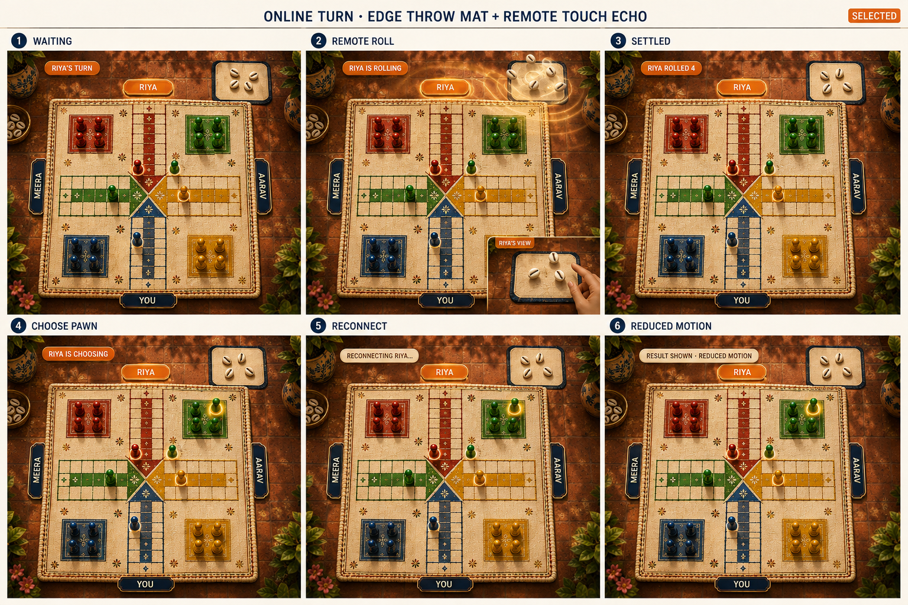

Waiting
Riya's name and home state turn orange; the board remains quiet and fully visible.
A viewer-relative online roll: the rolling player sees the approved local hand release, while everyone else sees a subtle directional response from that player's board edge.

Riya's name and home state turn orange; the board remains quiet and fully visible.
A soft edge-origin echo directs the cowries into Riya's outside-board mat. Only Riya's own view uses a hand.
Every player sees the same settled cowries and concise result before move selection begins.
Only Riya's playable pawn receives the restrained magical lift and glow; observers cannot act.
The current result and legal-pawn state stay visible, with plain-language connection messaging.
The settled result appears immediately with no ripple, airborne shells, trails, or replayed flourish.